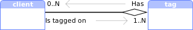
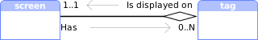
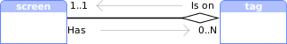

Module: tag
Labelled container where client objects can be stored.
What is a tag?
In AwesomeWM, a tag is a group of clients. It can either be used as labels or as more classical workspaces depending on how they are configured.

- A tag can be attached to multiple clients
- A client can be attached to multiple tags
- A tag can only be in 1 screen any given time, but can be moved
- All clients attached to a tag must be in the same screen as the tag
Creating tags
The default config initializes tags like this:
awful.tag(
{ "1", "2", "3", "4", "5", "6", "7", "8", "9" },
s,
awful.layout.layouts[1]
)
If you wish to have tags with different properties, then awful.tag.add is a better choice:
awful.tag.add("First tag", { icon = "/path/to/icon1.png", layout = awful.layout.suit.tile, master_fill_policy = "master_width_factor", gap_single_client = true, gap = 15, screen = s, selected = true, }) awful.tag.add("Second tag", { icon = "/path/to/icon2.png", layout = awful.layout.suit.max, screen = s, })
Note: the example above sets “First tag” to be selected explicitly, because otherwise you will find yourself without any selected tag.
Accessing tags
To access the “current tags”, use
local tags = awful.screen.focused().selected_tags
See: awful.screen.focused
See: screen.selected_tags
To ignore the corner case where multiple tags are selected:
local t = awful.screen.focused().selected_tag
See: screen.selected_tag
To get all tags for the focused screen:
local tags = awful.screen.focused().tags
See: screen.tags
To get all tags:
local tags = root.tags()
To get the current tag of the focused client:
local t = client.focus and client.focus.first_tag or nil
See: client.focus See: client.first_tag
To get a tag from its name:
local t = awful.tag.find_by_name(awful.screen.focused(), "name")
Common keybindings code
Here is a few useful shortcuts not part of the default rc.lua. Add these
functions above – {{{ Key bindings:
Delete the current tag
local function delete_tag() local t = awful.screen.focused().selected_tag if not t then return end t:delete() end
Create a new tag at the end of the list
local function add_tag() awful.tag.add("NewTag", { screen = awful.screen.focused(), layout = awful.layout.suit.floating }):view_only() end
Rename the current tag
local function rename_tag() awful.prompt.run { prompt = "New tag name: ", textbox = awful.screen.focused().mypromptbox.widget, exe_callback = function(new_name) if not new_name or #new_name == 0 then return end local t = awful.screen.focused().selected_tag if t then t.name = new_name end end } end
Move the focused client to a new tag
local function move_to_new_tag() local c = client.focus if not c then return end local t = awful.tag.add(c.class,{screen= c.screen }) c:tags({t}) t:view_only() end
Copy the current tag at the end of the list
local function copy_tag() local t = awful.screen.focused().selected_tag if not t then return end local clients = t:clients() local t2 = awful.tag.add(t.name, awful.tag.getdata(t)) t2:clients(clients) t2:view_only() end
And, in the globalkeys table:
awful.key({ modkey, }, "a", add_tag,
{description = "add a tag", group = "tag"}),
awful.key({ modkey, "Shift" }, "a", delete_tag,
{description = "delete the current tag", group = "tag"}),
awful.key({ modkey, "Control" }, "a", move_to_new_tag,
{description = "add a tag with the focused client", group = "tag"}),
awful.key({ modkey, "Mod1" }, "a", copy_tag,
{description = "create a copy of the current tag", group = "tag"}),
awful.key({ modkey, "Shift" }, "r", rename_tag,
{description = "rename the current tag", group = "tag"}),
See the global keybindings for more information about the keybindings.
Some signal names are starting with a dot. These dots are artefacts from the documentation generation, you get the real signal name by removing the starting dot.
Core components relationship
| Acquire other objects from a tag | ||
|---|---|---|
| Class | Property | |
| client |  | t:clients() |
| screen |  | t.screen |
| Acquire a tag from other objects | ||
|---|---|---|
| Class | Property | |
| client | c.tags | |
| screen | s.tags | |
| screen |  | s.selected_tag |
| screen | s.selected_tags | |
Info:
- Copyright: 2008-2009 Julien Danjou
-
Originally authored by: Julien Danjou <julien@danjou.info>
(Full contributors list available on our github project)
Constructors
| awful.tag.add (name, props) | Add a tag. |
Static module functions
| tag.instances () -> table | Get the number of instances. | |
| tag.disconnect_signal (name, func) | Disconnect from a signal. | |
| tag.emit_signal (name, ...) | Emit a signal. | |
| tag.connect_signal (name, func) | Connect to a signal. | |
| awful.tag.new (names, screen, layout) -> table | Create a set of tags and attach it to a screen. | |
| awful.tag.find_fallback (screen, invalids) -> tag or nil | Find a suitable fallback tag. | |
| awful.tag.history.update (obj) | Update the tag history. | |
| awful.tag.history.restore (screen, idx) | Revert tag history. | |
| awful.tag.find_by_name (s, name) -> tag or nil | Find a tag by name. | |
| awful.tag.incmwfact (add, t) | Increase master width factor. | |
| awful.tag.incgap (add, t) | Increase the spacing between clients | |
| awful.tag.togglemfpol (t) | Toggle size fill policy for the master client(s) between “expand” and master_width_factor. | |
| awful.tag.incnmaster (add, t, sensible) | Increase the number of master windows. | |
| awful.tag.incncol (add, t, sensible) | Increase number of column windows. | |
| awful.tag.viewnone (screen) | View no tag. | |
| awful.tag.viewidx (i, screen) | Select a tag relative to the currently selected one. | |
| awful.tag.viewnext (screen) | View next tag. | |
| awful.tag.viewprev (screen) | View previous tag. | |
| awful.tag.viewmore (tags, screen, maximum) | View only a set of tags. | |
| awful.tag.viewtoggle (t) | Toggle selection of a tag | |
| awful.tag.attached_connect_signal (screen, signal, callback) | Add a signal to all attached tags and all tags that will be attached in the future. |
Object properties
| name | string | Tag name. | |
| selected | boolean | True if the tag is selected to be viewed. | |
| activated | boolean | True if the tag is active and can be used. | |
| index | integer | The tag index. | |
| screen | screen | The tag screen. | |
| master_width_factor | number | The tag master width factor. | |
| layout | layout or function | The tag client layout. | |
| layouts | table or nil | The (proposed) list of available layouts for this tag. | |
| volatile | boolean | Define if the tag must be deleted when the last client is untagged. | |
| gap | integer | The gap (spacing, also called useless_gap) between clients. | |
| gap_single_client | boolean | Enable gaps for a single client. | |
| master_fill_policy | string | Set size fill policy for the master client(s). | |
| master_count | integer | Set the number of master windows. | |
| icon | image or nil | Set the tag icon. | |
| column_count | integer | Set the number of columns. |
Object methods
| :clients (clients_table) -> table | Get or set the clients attached to this tag. | |
| :swap (tag2) | Swap 2 tags. | |
| :clear {[args]} | Remove all tagged clients. | |
| :delete (fallback_tag, force) -> boolean | Delete a tag. | |
| :view_only () | View only a tag. | |
| :emit_signal (name, ...) | Emit a signal. | Inherited from gears.object |
| :connect_signal (name, func) | Connect to a signal. | Inherited from gears.object |
| :weak_connect_signal (name, func) | Connect to a signal weakly. | Inherited from gears.object |
Signals
| request::select | Emitted when a tag requests to be selected. | |
| request::default_layouts | This signal is emitted to request the list of default layouts. | |
| request::layouts | This signals is emitted when a tag needs layouts for the first time. | |
| tagged | Emitted when a client gets tagged with this tag. | |
| untagged | Emitted when a client gets untagged with this tag. | |
| cleared | Emitted when all clients are removed from the tag. | |
| property::urgent | Emitted when the number of urgent clients on this tag changes. | |
| property::urgent_count | Emitted when the number of urgent clients on this tag changes. | |
| request::screen | Emitted when a screen is removed. | |
| removal-pending | Emitted after request::screen if no new screen has been set. |
Theme variables
| beautiful.master_width_factor | number | The default master width factor | |
| beautiful.useless_gap | number | The default gap. | |
| beautiful.gap_single_client | boolean | Enable gaps for a single client. | |
| beautiful.master_fill_policy | string | The default fill policy. | |
| beautiful.master_count | integer | The default number of master windows. | |
| beautiful.column_count | integer | The default number of columns. |
Deprecated functions
| awful.tag.move (new_index, target_tag) |
Move a tag to an absolute position in the screen[]:tags() table.
|
Deprecated |
| awful.tag.swap (tag1, tag2) | Swap 2 tags | Deprecated |
| awful.tag.delete (target_tag, fallback_tag) | Delete a tag. | Deprecated |
| awful.tag.gettags (s) | Get a list of all tags on a screen | Deprecated |
| awful.tag.setscreen (s, t) | Set a tag’s screen | Deprecated |
| awful.tag.getscreen (t) | Get a tag’s screen | Deprecated |
| awful.tag.selectedlist (s) | Return a table with all visible tags | Deprecated |
| awful.tag.selected (s) | Return only the first visible tag. | Deprecated |
| awful.tag.setmwfact (mwfact, t) | Set master width factor. | Deprecated |
| awful.tag.getmwfact (t) | Get master width factor. | Deprecated |
| awful.tag.setlayout (layout, t) | Set layout. | Deprecated |
| awful.tag.setvolatile (volatile, t) | Set if the tag must be deleted when the last client is untagged | Deprecated |
| awful.tag.getvolatile (t) | Get if the tag must be deleted when the last client closes | Deprecated |
| awful.tag.setgap (useless_gap, t) | Set the spacing between clients | Deprecated |
| awful.tag.getgap (t, numclients) | Get the spacing between clients. | Deprecated |
| awful.tag.setmfpol (policy, t) | Set size fill policy for the master client(s) | Deprecated |
| awful.tag.getmfpol (t) | Get size fill policy for the master client(s) | Deprecated |
| awful.tag.setnmaster (nmaster, t) | The number of master clients. | Deprecated |
| awful.tag.getnmaster (t) | Get the number of master windows. | Deprecated |
| awful.tag.seticon (icon, tag) | Set the tag icon | Deprecated |
| awful.tag.geticon (tag) | Get the tag icon | Deprecated |
| awful.tag.setncol (ncol, t) | Set number of column windows. | Deprecated |
| awful.tag.getncol (t) | Get number of column windows. | Deprecated |
| awful.tag.getidx (query_tag) | Get a tag’s index in the gettags() table. | Deprecated |
| awful.tag.viewonly (t) | View only a tag. | Deprecated |
| awful.tag.getdata (t) | Get tag data table. | Deprecated |
| awful.tag.getproperty (t, prop) | Get a tag property. | Deprecated |
| awful.tag.setproperty (t, prop, value) | Set a tag property. | Deprecated |
| awful.tag.withcurrent (c) | Tag a client with the set of current tags. | Deprecated |
Fields
| awful.tag.history.limit | integer | The number of elements kept in the history. | |
| awful.tag.layouts | N/A | An ordered list of layouts. |
Constructors
- 🔗 awful.tag.add (name, props)
-
Add a tag.
This function allow to create tags from a set of properties:
local t = awful.tag.add("my new tag", { screen = screen.primary, layout = awful.layout.suit.max, })Parameters:
Name Type(s) Description Default value name string The tag name, a string Not applicable props Optional table or nil The tags initial properties, a table nilReturns:
-
tag
The created tag.
See also:
tag.delete Delete a tag. object methods
Static module functions
- 🔗 tag.instances () -> table
-
Get the number of instances.
Returns:
-
table
The number of tag objects alive.
- 🔗 tag.disconnect_signal (name, func)
-
Disconnect from a signal.
Parameters:
Name Type(s) Description name string The name of the signal. func function The callback that should be disconnected. - 🔗 tag.emit_signal (name, ...)
-
Emit a signal.
Parameters:
Name Type(s) Description name string The name of the signal. ... Extra arguments for the callback functions. Each connected function receives the object as first argument and then any extra arguments that are given to emit_signal(). - 🔗 tag.connect_signal (name, func)
-
Connect to a signal.
Parameters:
Name Type(s) Description name string The name of the signal. func function The callback to call when the signal is emitted. - 🔗 awful.tag.new (names, screen, layout) -> table
-
Create a set of tags and attach it to a screen.
This is what’s performed by the default config:
-- Calling awful.tag.new awful.tag({ "1", "2", "3", "4", "5", "6", "7", "8", "9" }, screen[1], awful.layout.layouts[1])It is also possible to set multiple layouts:
local some_layouts = { awful.layout.suit.fair, awful.layout.suit.spiral, awful.layout.suit.spiral.dwindle, awful.layout.suit.magnifier, awful.layout.suit.corner.nw, } -- Calling awful.tag.new awful.tag({ "one", "two", "three", "four", "five" }, screen[1], some_layouts) -- Add some clients for _, t in ipairs(screen[1].tags) do for _ = 1, 5 do awful.spawn("xterm", {tag = t}) end endParameters:
Name Type(s) Description Default value names table The tag name, in a table Not applicable screen Optional screen or number The tag screen. 1layout table The layout or layout table to set for this tags by default. Not applicable Returns:
-
table
A table with all created tags.
- 🔗 awful.tag.find_fallback (screen, invalids) -> tag or nil
-
Find a suitable fallback tag.
Parameters:
Name Type(s) Description Default value screen Optional screen The screen to look for a tag on. awful.screen.focused()invalids Optional table or nil A table of tags considered unacceptable. nilReturns:
-
tag or nil
Returns a fallback tag if one was found, otherwise
nil. - 🔗 awful.tag.history.update (obj)
-
Update the tag history.
Parameters:
Name Type(s) Description obj screen Screen object. - 🔗 awful.tag.history.restore (screen, idx)
-
Revert tag history.
Parameters:
Name Type(s) Description screen screen The screen. idx number Index in history. Defaults to “previous” which is a special index toggling between last two selected sets of tags. Number (eg 1) will go back to the given index in history. - 🔗 awful.tag.find_by_name (s, name) -> tag or nil
-
Find a tag by name.
Parameters:
Name Type(s) Description s screen The screen of the tag name string The name of the tag Returns:
-
tag or nil
The tag found, or
nilUsage:
-- For the current screen local t = awful.tag.find_by_name(awful.screen.focused(), "name") -- For a screen index local t = awful.tag.find_by_name(screen[1], "name") -- For all screens local t = awful.tag.find_by_name(nil, "name")
- 🔗 awful.tag.incmwfact (add, t)
-
Increase master width factor.
Parameters:
Name Type(s) Description Default value add number Value to add to master width factor. Not applicable t Optional tag The tag to modify. awful.screen.focused().selected_tagSee also:
master_width_factor The tag master width factor. object properties - 🔗 awful.tag.incgap (add, t)
-
Increase the spacing between clients
Parameters:
Name Type(s) Description Default value add number Value to add to the spacing between clients Not applicable t Optional tag The tag to modify. awful.screen.focused().selected_tagSee also:
gap The gap (spacing, also called useless_gap) between clients. object properties beautiful.useless_gap The default gap. theme variables - 🔗 awful.tag.togglemfpol (t)
-
Toggle size fill policy for the master client(s)
between “expand” and master_width_factor.
Parameters:
Name Type(s) Description Default value t Optional tag The tag to modify. awful.screen.focused().selected_tagSee also:
master_fill_policy Set size fill policy for the master client(s). object properties - 🔗 awful.tag.incnmaster (add, t, sensible)
-
Increase the number of master windows.
Parameters:
Name Type(s) Description Default value add number Value to add to number of master windows. Not applicable t Optional tag The tag to modify. awful.screen.focused().selected_tagsensible Optional boolean Limit nmaster based on the number of visible tiled windows? falseSee also:
master_count Set the number of master windows. object properties - 🔗 awful.tag.incncol (add, t, sensible)
-
Increase number of column windows.
Parameters:
Name Type(s) Description Default value add number Value to add to number of column windows. Not applicable t Optional tag The tag to modify. awful.screen.focused().selected_tagsensible Optional boolean Limit column_count based on the number of visible tiled windows? false - 🔗 awful.tag.viewnone (screen)
-
View no tag.
-- Calling awful.tag.new awful.tag({ "one", "two", "three", "four" }, screen[1]) -- Manually select some tags (tag 1 was auto selected). screen[1].tags[3].selected = true screen[1].tags[4].selected = true -- Deselect all tags. awful.tag.viewnone()Parameters:
Name Type(s) Description screen Optional int or screen The screen. - 🔗 awful.tag.viewidx (i, screen)
-
Select a tag relative to the currently selected one.
Note that this doesn’t work well with multiple selection.
-- Calling awful.tag.new awful.tag({ "one", "two", "three", "four" }, screen[1]) screen[1].tags[2]:view_only() -- Select the tag relative to idx 2. awful.tag.viewidx(2) -- Select the tag relative to idx -2. awful.tag.viewidx(-2)This is equivalent to
screen.tags[i]:view_only()Parameters:
Name Type(s) Description i number The relative index to see. screen Optional screen The screen. See also:
screen.tags A list of all tags on the screen. (screen) object properties awful.tag.viewnext View next tag. static module functions awful.tag.viewprev View previous tag. static module functions - 🔗 awful.tag.viewnext (screen)
-
View next tag. This is the same as
tag.viewidx(1).Note that this doesn’t work well with multiple selection.
-- Calling awful.tag.new awful.tag({ "one", "two", "three", "four" }, screen[1]) screen[1].tags[3]:view_only() -- Select the next tag. awful.tag.viewnext() -- Select the next tag (again). awful.tag.viewnext()Parameters:
Name Type(s) Description screen screen The screen. See also:
awful.tag.viewidx Select a tag relative to the currently selected one. static module functions awful.tag.viewprev View previous tag. static module functions - 🔗 awful.tag.viewprev (screen)
-
View previous tag. This is the same a
tag.viewidx(-1).Note that this doesn’t work well with multiple selection.
-- Calling awful.tag.new awful.tag({ "one", "two", "three", "four" }, screen[1]) screen[1].tags[2]:view_only() -- Select the previous tag. awful.tag.viewprev() -- Select the previous tag (again). awful.tag.viewprev()Parameters:
Name Type(s) Description screen screen The screen. See also:
awful.tag.viewidx Select a tag relative to the currently selected one. static module functions awful.tag.viewnext View next tag. static module functions - 🔗 awful.tag.viewmore (tags, screen, maximum)
-
View only a set of tags.
If
maximumis set, there will be a limit on the number of new tag being selected. The tags already selected do not count. To do nothing if one or more of the tags are already selected, setmaximumto zero.Parameters:
Name Type(s) Description Default value tags table A table with tags to view only. Not applicable screen Optional screen The screen of the tags. Undefined maximum Optional number The maximum number of tags to select. #tags - 🔗 awful.tag.viewtoggle (t)
-
Toggle selection of a tag
Parameters:
Name Type(s) Description t tag Tag to be toggled See also:
selected True if the tag is selected to be viewed. object properties - 🔗 awful.tag.attached_connect_signal (screen, signal, callback)
-
Add a signal to all attached tags and all tags that will be attached in the
future. When a tag is detached from the screen, its signal is removed.
Parameters:
Name Type(s) Description screen screen or nil The screen concerned, or all if nil.signal string The signal name. callback function
Object properties
- 🔗 name string · 1 signal
-
Tag name.
-- Calling awful.tag.new awful.tag({ "one", "two", "three", "four" }, screen[1]) screen[1].tags[2]:view_only() -- Change the name to New*tag*name. screen[1].tags[2].name = "New*tag*name"Constraints:
Default value : ""
Click to display more Emit signals:
- 🔗 selected boolean · 1 signal
-
True if the tag is selected to be viewed.
-- Calling awful.tag.new awful.tag({ "one", "two", "three", "four" }, screen[1]) -- Change the selection. screen[1].tags[1].selected = not screen[1].tags[1].selected screen[1].tags[2].selected = true screen[1].tags[3].selected = trueConstraints:
Default value : falseValid values : trueorfalse.
Click to display more Emit signals:
- 🔗 activated boolean · 1 signal
-
True if the tag is active and can be used.
Constraints:
Default value : trueValid values : trueorfalse.
Click to display more Emit signals:
- 🔗 index integer · 1 signal
-
The tag index.
-- Calling awful.tag.new awful.tag({ "one", "two", "three", "four" }, screen[1]) -- Send the first tag to index 3. screen[1].tags[1].index = 3 -- Send the first tag to index 3. screen[1].tags[4].index = 1The index is the position as shown in the awful.widget.taglist.
Constraints:
Default value : This is based on the current list of t.screen:tags().Negative allowed : false
Click to display more Emit signals:
- 🔗 screen screen · 1 signal
-
The tag screen.
Constraints:
Default value : awful.screen.focused()Type description: screen : A valid screen object such as retured by awful.screen.focused()or mouse.screen.integer : A screen global id. Avoid using this since they are unsorted. string : The "primary"value is also valid.See also:
screen A physical or virtual screen object. module
Click to display more Emit signals:
- 🔗 master_width_factor number · 2 signals
-
The tag master width factor.
The master width factor is one of the 5 main properties used to configure the layout. Each layout interpret (or ignore) this property differently.
See the layout suit documentation for information about how the master width factor is used.
When multiple columns are used, the master width remains the same, but the other columns split the remaining space among them:
Constraints:
Default value : beautiful.master_width_factorMinimum value : 0.0 Maximum value : 1.0 See also:
master_count Set the number of master windows. object properties column_count Set the number of columns. object properties master_fill_policy Set size fill policy for the master client(s). object properties gap The gap (spacing, also called useless_gap) between clients. object properties awful.tag.incmwfact Increase master width factor. static module functions
Click to display more Emit signals:
property::mwfactWhen the value changes (deprecated).property::master_width_factorWhen the value changes.
Consumed theme variables:
Theme variable Usage beautiful.master_width_factor - 🔗 layout layout or function · 1 signal
-
The tag client layout.
This property holds the layout. A layout can be either stateless or stateful. Stateless layouts are used by default by Awesome. They tile clients without any other overhead. They take an ordered list of clients and place them on the screen. Stateful layouts create an object instance for each tags and can store variables and metadata. Because of this, they are able to change over time and be serialized (saved).
Both types of layouts have valid usage scenarios.
Stateless layouts:
These layouts are stored in
awful.layout.suit. They expose a table with 2 fields:- name (string): The layout name. This should be unique.
- arrange (function): The function called when the clients need to be placed. The only parameter is a table or arguments returned by awful.layout.parameters
The parameter table contains:
Parameter Type Description workareatable A table with x,y,widthandheightkeys.
All clients must be placed within this area.geometrytable A table with the screen geometry. clients table A list of the clients to place. screen screen The screen. paddingtable A table with left,right,topandbottomkeys.useless_gap integer The space that will be removed from the clients. geometriestable Empty. Place the client as key and preferred geometry
as value. Do not call:geometry()directly.Stateful layouts:
The stateful layouts API is the same as stateless, but they are a function returining a layout instead of a layout itself. They also should have an
is_dynamic = trueproperty. If they don’t,awful.tagwill create a new instance every time the layout is set. If they do, the instance will be cached and re-used.The client organized by the layout will fill the screen
tiling_areasection:Constraints:
Default value : The first non-nil value of either self.layouts[1]orawful.layout.layouts[1]orawful.layout.suit.floating.Function prototype: Parameters: params (table) : A table containing the state of the layout (see the table above). Return : The function returns nothing. Valid values : A layout table or a constructor function See also:
awful.tag.layouts An ordered list of layouts. fields awful.layout.parameters Get the layout parameters used for the screen This should give the same result as “arrange”, but without the “geometries” parameter, as this is computed during arranging. (awful.layout)
static module functions
Click to display more Emit signals:
- 🔗 layouts table or nil · 1 permission
-
The (proposed) list of available layouts for this tag.
This property allows to define a subset (or superset) of layouts available in the “rotation table”. In the default configuration file,
Mod4+SpaceandMod4+Shift+Spaceare used to switch between tags. The awful.widget.layoutlist also uses this as its default layout filter.By default, it will be the same as awful.layout.layouts unless there the a layout not present is used. If that’s the case they will be added at the front of the list.
Constraints:
Default value : nilType description: nil : Use the current value of awful.layout.layouts. See also:
awful.layout.layouts The default list of layouts. (awful.layout) fields screen.workarea The screen workarea. (screen) object properties screen.padding The screen padding. (screen) object properties layout The tag client layout. object properties
Click to display more Requested actions or permissions:
Class Permission Context Default Description tag layouts awful granted When the layouts property is first called and there is no layouts, then that signal is called. - 🔗 volatile boolean · 1 signal
-
Define if the tag must be deleted when the last client is untagged.
This is useful to create “throw-away” tags for operation like 50/50 (Windows “Aero Snap) side-by-side views. This keybinding code for this is:
local function aero_tag() local c = client.focus if not c then return end local c2 = awful.client.focus.history.list[2] if (not c2) or c2 == c then return end local t = awful.tag.add("Aero", { screen = c.screen, volatile = true, layout = awful.layout.suit.tile, master_width_factor = 0.5 }) t:clients({c, c2}) t:view_only() end-- Create a non-volatile and a volatile tag. awful.tag.add("Non-Volatile", { screen = screen[1], layout = awful.layout.suit.corner.nw, volatile = false, }) awful.tag.add("Volatile", { screen = screen[1], layout = awful.layout.suit.corner.nw, volatile = true, }) -- Add some clients. for _, t in ipairs(screen[1].tags) do for _ = 1, 5 do awful.spawn("xterm", {tag = t}) end end -- Kill all clients. while #client.get() ~= 0 do client.get()[1]:kill() endAs you can see, the “Volatile” tag has been automatically discarded while the “Non-volatile” tag is still there (but with zero clients).
Constraints:
Default value : falseValid values : trueorfalse.See also:
delete Delete a tag. object methods
Click to display more Emit signals:
- 🔗 gap integer · 1 signal
-
The gap (spacing, also called useless_gap) between clients.
This property allows to waste space on the screen in the name of style, unicorns and readability.
In this example, the value of gap is set to 20:
Compared to setting to the (very high) value of 50:
Constraints:
Default value : beautiful.useless_gapUnit : pixel Negative allowed : false Valid values : The value has to be greater than zero. See also:
gap_single_client Enable gaps for a single client. object properties awful.tag.incgap Increase the spacing between clients static module functions
Click to display more Emit signals:
property::useless_gapWhen the gap changes.
Consumed theme variables:
Theme variable Usage beautiful.useless_gap - 🔗 gap_single_client boolean · 1 signal
-
Enable gaps for a single client.
If the gaps are used purely for readability when multiple clients are tiled, then it may make sense to disable it when there is only a single client (to recover that space). In that case, set gap_single_client to
false.Default (with a 20px gap):
when set to false:
Constraints:
Default value : beautiful.gap_single_clientValid values : Enable gaps for a single client See also:
awful.tag.incgap Increase the spacing between clients static module functions
Click to display more Emit signals:
property::gap_single_clientWhen the gap_single_client value changes.selftag The object which changed (useful when connecting many object to the same callback).
Consumed theme variables:
Theme variable Usage beautiful.gap_single_client - 🔗 master_fill_policy string · 1 signal
-
Set size fill policy for the master client(s).
Some multi-column layouts can be configured so that the space is redistributed when there is not enough clients to fill all columns.
This is the default behavior of the
tile.leftlayout (expand):This is what happends when set to master_width_factor:
The remaining space that would have been used for the second column is redistributed on both side.
Constraints:
Default value : beautiful.master_fill_policyValid values: "expand": Take all the space "master_width_factor": Only take the ratio defined by the master_width_factorSee also:
awful.tag.togglemfpol Toggle size fill policy for the master client(s) between “expand” and master_width_factor. static module functions
Click to display more Emit signals:
property::master_fill_policyWhen the master_fill_policy value changes.selftag The object which changed (useful when connecting many object to the same callback).
Consumed theme variables:
Theme variable Usage beautiful.master_fill_policy - 🔗 master_count integer · 2 signals
-
Set the number of master windows.
-- Create a tag with master count of 1 and tag with count of 2 awful.tag.add("Master 1", { screen = screen[1], layout = awful.layout.suit.tile, master_count = 1, }) awful.tag.add("Master 2", { screen = screen[1], layout = awful.layout.suit.tile, master_count = 2, }) -- Add some clients. for _, t in ipairs(screen[1].tags) do for _ = 1, 5 do awful.spawn("xterm", {tag = t}) end endConstraints:
Default value : beautiful.master_countMinimum value : 1 Valid values : Only positive values are accepted See also:
awful.tag.incnmaster Increase the number of master windows. static module functions
Click to display more Emit signals:
property::nmasterDeprecated.property::master_countWhen the value changes.
Consumed theme variables:
Theme variable Usage beautiful.master_count - 🔗 icon image or nil · 1 signal
-
Set the tag icon.
awful.tag.add("one", {}) awful.tag.add("two", { icon = beautiful.awesome_icon }) awful.tag.add("three", {})Constraints:
Default value : nilType description: string : Interpreted as a path to an image file. string : A valid SVG content. cairo : A cairo image surface: Directly used as-is. librsvg : A librsvg handle object: Directly used as-is. nil : Unset the image. See also:
awful.widget.taglist Taglist widget module for awful. module gears.surface Utilities to integrate and manipulate Cairo drawing surfaces. module
Click to display more Emit signals:
- 🔗 column_count integer · 2 signals
-
Set the number of columns.
-- Create a tag with column count of 1 and tag with count of 2 awful.tag.add("1 column", { screen = screen[1], layout = awful.layout.suit.tile, column_count = 1, }) awful.tag.add("2 columns", { screen = screen[1], layout = awful.layout.suit.tile, column_count = 2, }) awful.tag.add("3 columns", { screen = screen[1], layout = awful.layout.suit.tile, column_count = 3, }) -- Add some clients. for _, t in ipairs(screen[1].tags) do for _ = 1, 6 do awful.spawn("xterm", {tag = t}) end endConstraints:
Default value : beautiful.column_count or 1Minimum value : 1 Valid values : Has to be greater than 1 See also:
awful.tag.incncol Increase number of column windows. static module functions
Click to display more Emit signals:
property::ncolDeprecated.property::column_countWhen the value changes.
Consumed theme variables:
Theme variable Usage beautiful.column_count
Object methods
- 🔗 :clients (clients_table) -> table
-
Get or set the clients attached to this tag.
Parameters:
Name Type(s) Description Default value clients_table Optional table None or a table of clients to set as being tagged with this tag. nilReturns:
-
table
A table with the clients attached to this tags.
- 🔗 :swap (tag2)
-
Swap 2 tags.
-- Calling awful.tag.new awful.tag({ "one", "two", "three", "four" }, screen[1]) screen[1].tags[2]:view_only() -- Swap tag 2 with tag 4. screen[1].tags[2]:swap(screen[1].tags[4])Parameters:
Name Type(s) Description tag2 tag The second tag See also:
client.swap Swap a client with another one in global client list. (client) object methods - 🔗 :clear {[args]} · 2 signals
-
Remove all tagged clients.
-- Calling awful.tag.new awful.tag({ "one", "two" }, screen[1], some_layouts) -- Call :clear() on the first tag. screen[1].tags[1]:clear{}Parameters:
Note: This object methods uses named parameters calling convention. It means you call it with{}and omit the parantheses. For example, calling this will all default argument would beclear{}. This is a Lua shortcut syntax equivalent toclear({}).argsis only a placeholder name for the "lone table argument" used in named parameters calls.Name Type(s) Description Default value args table The arguments. Not applicable fallback_tag tag A fallback tag. Not applicable allow_untagged Optional boolean Allow the untagged clients to remain untagged. false
Click to display more Emit signals:
- 🔗 :delete (fallback_tag, force) -> boolean
-
Delete a tag.
To delete the current tag:
-- Calling awful.tag.new awful.tag({ "one", "two", "three", "four" }, screen[1]) screen[1].tags[2]:view_only() -- Delete the selected tag. mouse.screen.selected_tag:delete()Parameters:
Name Type(s) Description Default value fallback_tag Optional tag Tag to assign stickied tags to. awful.tag.find_fallback()force Optional boolean Move even non-sticky clients to the fallback tag. falseReturns:
-
boolean
Returns true if the tag is successfully deleted.
If there are no clients exclusively on this tag then delete it. Any
stickied clients are assigned to the optional ‘fallback_tag’.
If after deleting the tag there is no selected tag, try and restore from
history or select the first tag on the screen.
See also:
awful.tag.add Add a tag. constructors awful.tag.find_fallback Find a suitable fallback tag. static module functions - 🔗 :view_only ()
-
View only a tag.
-- Calling awful.tag.new awful.tag({ "one", "two", "three", "four" }, screen[1]) -- Manually select some tags (tag 1 was auto selected). screen[1].tags[3].selected = true screen[1].tags[4].selected = true -- Call :view_only() on the second tag. screen[1].tags[2]:view_only()See also:
selected True if the tag is selected to be viewed. object properties - 🔗 :emit_signal (name, ...) · Inherited from gears.object
-
Emit a signal.
Parameters:
Name Type(s) Description name string The name of the signal. ... Extra arguments for the callback functions. Each connected function receives the object as first argument and then any extra arguments that are given to emit_signal(). - 🔗 :connect_signal (name, func) · Inherited from gears.object
-
Connect to a signal.
Parameters:
Name Type(s) Description name string The name of the signal. func function The callback to call when the signal is emitted. - 🔗 :weak_connect_signal (name, func) · Inherited from gears.object
-
Connect to a signal weakly.
This allows the callback function to be garbage collected and automatically disconnects the signal when that happens.
Warning: Only use this function if you really, really, really know what you are doing.
Parameters:
Name Type(s) Description name string The name of the signal. func function The callback to call when the signal is emitted.
Signals
- 🔗 request::select · 1 permission
-
Emitted when a tag requests to be selected.
Arguments:
Name Type(s) Description context string The reason why it was called.
Click to display more Requested actions or permissions:
Class Permission Context Default Description tag select ewmh granted When the client request to be moved to a specific virtual desktop. AwesomeWM interprets virtual desktop as indexed tags. - 🔗 request::default_layouts · 1 permission · Class level only
-
This signal is emitted to request the list of default layouts.
It is emitted on the global tag class rather than individual tag objects. This default handler is part of rc.lua:
tag.connect_signal("request::default_layouts", function() awful.layout.append_default_layouts({ awful.layout.suit.floating, awful.layout.suit.tile, awful.layout.suit.tile.left, awful.layout.suit.tile.bottom, awful.layout.suit.tile.top, awful.layout.suit.fair, awful.layout.suit.fair.horizontal, awful.layout.suit.spiral, awful.layout.suit.spiral.dwindle, awful.layout.suit.max, awful.layout.suit.max.fullscreen, awful.layout.suit.magnifier, awful.layout.suit.corner.nw, }) end)External modules can also use this signal to dynamically add additional default layouts.
tag.connect_signal("request::default_layouts", function() awful.layout.append_default_layouts({ custom_module.layout_1, custom_module.layout_2, }) end)Arguments:
Name Type(s) Description context string The context (currently always “startup”). See also:
awful.layout.layouts The default list of layouts. (awful.layout) fields awful.layout.append_default_layout Append a layout to the list of default tag layouts. (awful.layout) static module functions awful.layout.remove_default_layout Remove a layout from the list of default layouts. (awful.layout) static module functions
Click to display more Requested actions or permissions:
Class Permission Context Default Description tag default_layouts startup granted When AwesomeWM starts, it queries for default layout using this request. - 🔗 request::layouts
-
This signals is emitted when a tag needs layouts for the first time.
If no handler implement it, it will fallback to the content added by request::default_layouts
Arguments:
Name Type(s) Description context string The context (currently always “awful”). hints table A, currently empty, table with hints. - 🔗 tagged
-
Emitted when a client gets tagged with this tag.
Arguments:
Name Type(s) Description c client The tagged client. - 🔗 untagged
-
Emitted when a client gets untagged with this tag.
Arguments:
Name Type(s) Description c client The untagged client. - 🔗 cleared
-
Emitted when all clients are removed from the tag.
See also:
clear Remove all tagged clients. object methods - 🔗 property::urgent
-
Emitted when the number of urgent clients on this tag changes.
Arguments:
Name Type(s) Description urgent boolean trueif there is at least one urgent client on the tag.See also:
client.urgent Set to truewhen the client ask for attention. (client)object properties - 🔗 property::urgent_count
-
Emitted when the number of urgent clients on this tag changes.
Arguments:
Name Type(s) Description count integer The number of urgent clients on the tag. See also:
client.urgent Set to truewhen the client ask for attention. (client)object properties - 🔗 request::screen
-
Emitted when a screen is removed.
This can be used to salvage existing tags by moving them to a new screen (or creating a virtual screen).
By default, there is no handler for this request and the tags will be deleted. To prevent this, an handler for this request must simply set a new screen for the tag.
Arguments:
Name Type(s) Description context string Why it was called. - 🔗 removal-pending
- Emitted after request::screen if no new screen has been set. The tag will be deleted, this is a last chance to move its clients before they are sent to a fallback tag. Connect to request::screen if you wish to salvage the tag.
Theme variables
- 🔗 beautiful.master_width_factor number
-
The default master width factor
See also:
master_width_factor The tag master width factor. object properties gap The gap (spacing, also called useless_gap) between clients. object properties
Click to display more Used by:
- master_width_factor The tag master width factor.
- master_width_factor The tag master width factor.
- 🔗 beautiful.useless_gap number
-
The default gap.
See also:
gap The gap (spacing, also called useless_gap) between clients. object properties gap_single_client Enable gaps for a single client. object properties
Click to display more Used by:
- 🔗 beautiful.gap_single_client boolean
-
Enable gaps for a single client.
See also:
gap The gap (spacing, also called useless_gap) between clients. object properties gap_single_client Enable gaps for a single client. object properties
Click to display more Used by:
- gap_single_client Enable gaps for a single client.
- gap_single_client Enable gaps for a single client.
- 🔗 beautiful.master_fill_policy string
-
The default fill policy.
Possible values:
- expand: Take all the space
- master_width_factor: Only take the ratio defined by the master_width_factor
See also:
master_fill_policy Set size fill policy for the master client(s). object properties
Click to display more Used by:
- master_fill_policy Set size fill policy for the master client(s).
- master_fill_policy Set size fill policy for the master client(s).
- 🔗 beautiful.master_count integer
-
The default number of master windows.
See also:
master_count Set the number of master windows. object properties
Click to display more Used by:
- master_count Set the number of master windows.
- master_count Set the number of master windows.
- 🔗 beautiful.column_count integer
-
The default number of columns.
See also:
column_count Set the number of columns. object properties
Click to display more Used by:
- column_count Set the number of columns.
- column_count Set the number of columns.
Deprecated functions
- 🔗 awful.tag.move (new_index, target_tag)
-
Move a tag to an absolute position in the
screen[]:tags()table.Parameters:
Name Type(s) Description Default value new_index integer Integer absolute position in the table to insert. Not applicable target_tag Optional tag The tag that should be moved. awful.screen.focused().selected_tagSee also:
index The tag index. object properties - 🔗 awful.tag.swap (tag1, tag2)
-
Swap 2 tags
Parameters:
Name Type(s) Description tag1 tag The first tag tag2 tag The second tag See also:
tag.swap Swap 2 tags. object methods - 🔗 awful.tag.delete (target_tag, fallback_tag)
-
Delete a tag.
Parameters:
Name Type(s) Description Default value target_tag Optional tag Optional tag object to delete. mouse.screen.selected_tagfallback_tag Optional tag or nil Tag to assign stickied tags to. Undefined Returns:
-
boolean
Returns true if the tag is successfully deleted, nil otherwise.
If there are no clients exclusively on this tag then delete it. Any
stickied clients are assigned to the optional ‘fallback_tag’.
If after deleting the tag there is no selected tag, try and restore from
history or select the first tag on the screen.
See also:
tag.delete Delete a tag. object methods - 🔗 awful.tag.gettags (s)
-
Get a list of all tags on a screen
Parameters:
Name Type(s) Description s screen Screen Returns:
-
table
A table with all available tags
See also:
screen.tags A list of all tags on the screen. (screen) object properties - 🔗 awful.tag.setscreen (s, t)
-
Set a tag’s screen
Parameters:
Name Type(s) Description s screen Screen t tag The tag object See also:
screen A physical or virtual screen object. module - 🔗 awful.tag.getscreen (t)
-
Get a tag’s screen
Parameters:
Name Type(s) Description Default value t Optional tag or nil Tag object awful.screen.focused().selected_tagaReturns:
-
screen
The tag screen.
See also:
screen A physical or virtual screen object. module - 🔗 awful.tag.selectedlist (s)
-
Return a table with all visible tags
Parameters:
Name Type(s) Description s screen Screen. Returns:
-
table
A table with all selected tags.
See also:
screen.selected_tags A list of all selected tags on the screen. (screen) object properties - 🔗 awful.tag.selected (s)
-
Return only the first visible tag.
Parameters:
Name Type(s) Description s screen Screen. See also:
screen.selected_tag The first selected tag. (screen) object properties - 🔗 awful.tag.setmwfact (mwfact, t)
-
Set master width factor.
Parameters:
Name Type(s) Description Default value mwfact number Master width factor. Not applicable t Optional tag The tag to modify. awful.screen.focused().selected_tagSee also:
master_fill_policy Set size fill policy for the master client(s). object properties master_width_factor The tag master width factor. object properties - 🔗 awful.tag.getmwfact (t)
-
Get master width factor.
Parameters:
Name Type(s) Description t Optional tag or nil The tag. See also:
master_width_factor The tag master width factor. object properties master_fill_policy Set size fill policy for the master client(s). object properties - 🔗 awful.tag.setlayout (layout, t)
-
Set layout.
Parameters:
Name Type(s) Description layout A layout table or a constructor function t tag The tag to modify Returns:
-
The layout
See also:
layout The tag client layout. object properties - 🔗 awful.tag.setvolatile (volatile, t)
-
Set if the tag must be deleted when the last client is untagged
Parameters:
Name Type(s) Description Default value volatile boolean If the tag must be deleted when the last client is untagged Not applicable t Optional tag The tag to modify. awful.screen.focused().selected_tagSee also:
volatile Define if the tag must be deleted when the last client is untagged. object properties - 🔗 awful.tag.getvolatile (t)
-
Get if the tag must be deleted when the last client closes
Parameters:
Name Type(s) Description Default value t Optional tag The tag to modify. opt=awful.screen.focused().selected_tagReturns:
-
boolean
If the tag will be deleted when the last client is untagged
See also:
volatile Define if the tag must be deleted when the last client is untagged. object properties - 🔗 awful.tag.setgap (useless_gap, t)
-
Set the spacing between clients
Parameters:
Name Type(s) Description Default value useless_gap number or nil The spacing between clients Not applicable t Optional tag The tag to modify. awful.screen.focused().selected_tagSee also:
gap The gap (spacing, also called useless_gap) between clients. object properties - 🔗 awful.tag.getgap (t, numclients)
-
Get the spacing between clients.
Parameters:
Name Type(s) Description Default value t Optional tag The tag. tag.selected()numclients Optional int Number of (tiled) clients. Passing this will return 0 for a single client. You can override this function to change this behavior. Undefined See also:
gap The gap (spacing, also called useless_gap) between clients. object properties - 🔗 awful.tag.setmfpol (policy, t)
-
Set size fill policy for the master client(s)
Parameters:
Name Type(s) Description Default value policy string Can be set to “expand” (fill all the available workarea) or master_width_factor (fill only an area inside the master width factor) Not applicable t Optional tag The tag to modify tag.selected()See also:
master_fill_policy Set size fill policy for the master client(s). object properties - 🔗 awful.tag.getmfpol (t)
-
Get size fill policy for the master client(s)
Parameters:
Name Type(s) Description Default value t Optional tag The tag tag.selected()Returns:
-
string
Possible values are
“expand” (fill all the available workarea, default one) or
“master_width_factor” (fill only an area inside the master width factor)
See also:
master_fill_policy Set size fill policy for the master client(s). object properties - 🔗 awful.tag.setnmaster (nmaster, t)
-
The number of master clients.
Parameters:
Name Type(s) Description nmaster number The number of master windows. t Optional tag The tag. See also:
master_count Set the number of master windows. object properties - 🔗 awful.tag.getnmaster (t)
-
Get the number of master windows.
Parameters:
Name Type(s) Description t Optional tag The tag. See also:
master_count Set the number of master windows. object properties - 🔗 awful.tag.seticon (icon, tag)
-
Set the tag icon
Parameters:
Name Type(s) Description icon gears.surface or string The icon to set, either path or image object tag tag The tag See also:
icon Set the tag icon. object properties - 🔗 awful.tag.geticon (tag)
-
Get the tag icon
Parameters:
Name Type(s) Description tag tag The tag See also:
icon Set the tag icon. object properties - 🔗 awful.tag.setncol (ncol, t)
-
Set number of column windows.
Parameters:
Name Type(s) Description Default value ncol integer The number of column. Not applicable t Optional tag The tag to modify. awful.screen.focused().selected_tagSee also:
column_count Set the number of columns. object properties - 🔗 awful.tag.getncol (t)
-
Get number of column windows.
Parameters:
Name Type(s) Description t Optional tag The tag. See also:
column_count Set the number of columns. object properties - 🔗 awful.tag.getidx (query_tag)
-
Get a tag’s index in the gettags() table.
Parameters:
Name Type(s) Description query_tag tag The tag object to find. [selected()] Returns:
-
integer or nil
The index of the tag, nil if the tag is not found.
See also:
index The tag index. object properties - 🔗 awful.tag.viewonly (t)
-
View only a tag.
Parameters:
Name Type(s) Description t tag The tag object. See also:
tag.view_only View only a tag. object methods - 🔗 awful.tag.getdata (t)
-
Get tag data table.
Do not use.
Parameters:
Name Type(s) Description t tag The tag. Returns:
-
table
The data table.
- 🔗 awful.tag.getproperty (t, prop)
-
Get a tag property.
Use
_tag.propdirectly.Parameters:
Name Type(s) Description t tag The tag. prop string The property name. Returns:
-
The property.
- 🔗 awful.tag.setproperty (t, prop, value)
-
Set a tag property.
This properties are internal to awful. Some are used to draw taglist, or to
handle layout, etc.
Use
t.prop = valueParameters:
Name Type(s) Description t tag The tag. prop string The property name. value The value. - 🔗 awful.tag.withcurrent (c)
-
Tag a client with the set of current tags.
Parameters:
Name Type(s) Description c client The client to tag.
Fields
- 🔗 awful.tag.history.limit integer
- The number of elements kept in the history.
- 🔗 awful.tag.layouts N/A
-
An ordered list of layouts.
awful.tag.layoutIs usually defined in rc.lua. It store the list of layouts used when selecting the previous and next layouts. This is the default:-- Table of layouts to cover with awful.layout.inc, order matters. awful.layout.layouts = { awful.layout.suit.floating, awful.layout.suit.tile, awful.layout.suit.tile.left, awful.layout.suit.tile.bottom, awful.layout.suit.tile.top, awful.layout.suit.fair, awful.layout.suit.fair.horizontal, awful.layout.suit.spiral, awful.layout.suit.spiral.dwindle, awful.layout.suit.max, awful.layout.suit.max.fullscreen, awful.layout.suit.magnifier, awful.layout.suit.corner.nw, -- awful.layout.suit.corner.ne, -- awful.layout.suit.corner.sw, -- awful.layout.suit.corner.se, }See also:
request::layouts This signals is emitted when a tag needs layouts for the first time. signals awful.layout.append_default_layouts Append many layouts to the list of default tag layouts. (awful.layout) static module functions awful.layout.append_default_layout Append a layout to the list of default tag layouts. (awful.layout) static module functions awful.layout.remove_default_layout Remove a layout from the list of default layouts. (awful.layout) static module functions